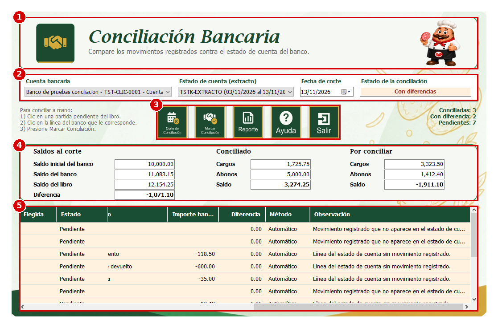
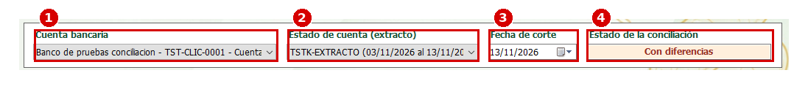
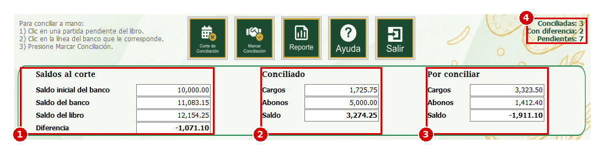
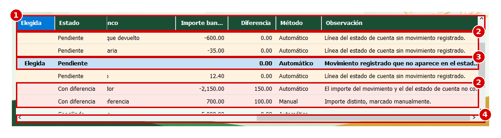
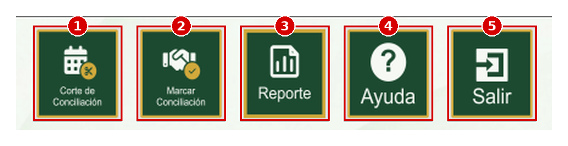
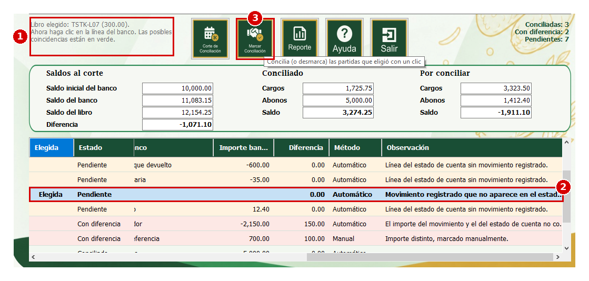
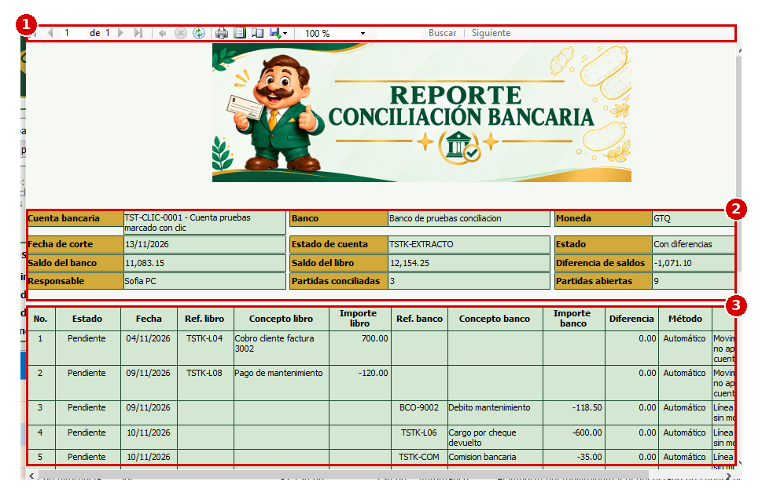

Esta es la ventana del proceso de Conciliación Bancaria del módulo de Bancos. Sirve para comparar los movimientos que la empresa tiene registrados en una cuenta (el libro) contra el estado de cuenta que envía el banco (el extracto) hasta una fecha de corte. El sistema empareja las partidas que coinciden, muestra las que quedan pendientes o con diferencia y permite marcar a mano las que no se pudieron emparejar solas. El resultado se guarda y se puede imprimir en un reporte. En las imágenes de esta ayuda, los números rojos indican el orden en que se explica cada elemento.
1. En el menú del MDI de Bancos busque la sección "Procesos".
2. Seleccione la opción "Conciliación Bancaria". Se abrirá la ventana "8007-ConciliaciónBancaria".
Si no ve la opción, solicite al administrador del sistema que le asigne el permiso para este proceso.
Antes de empezar, el estado de cuenta del banco ya debe estar cargado en el sistema; esta ventana lo lee, pero no lo importa.
1. Encabezado; muestra el nombre del proceso, "Conciliación Bancaria".
2. Datos de la conciliación; aquí se elige la cuenta, el estado de cuenta y la fecha de corte, y se ve el estado de la conciliación.
3. Botones; son las acciones del proceso (corte, marcar, reporte, ayuda y salir).
4. Resumen de saldos; muestra los saldos al corte, lo que ya está conciliado y lo que falta por conciliar.
5. Tabla de partidas; muestra una fila por cada pareja o partida suelta del libro o del banco.

1. Cuenta bancaria; es la lista donde se elige la cuenta que se quiere conciliar.
2. Estado de cuenta (extracto); es la lista con los estados de cuenta cargados para la cuenta elegida. Al elegir uno, el sistema muestra su saldo inicial en el resumen.
3. Fecha de corte; es el día hasta el cual se concilia, con el formato dd/MM/aaaa. Solo se puede elegir una fecha dentro del período del estado de cuenta; el sistema propone la fecha final del extracto.
4. Estado de la conciliación; es un campo que no se escribe. Dice "Sin corte" hasta que se hace el corte y después muestra el estado de la conciliación (ver "Estados de la conciliación").
Si cambia la cuenta, el estado de cuenta o la fecha de corte, el resumen y la tabla se vacían y debe volver a presionar "Corte".
Si la cuenta no tiene estados de cuenta cargados, el sistema muestra el mensaje "La cuenta seleccionada no tiene estados de cuenta cargados".

1. Elija la cuenta, el estado de cuenta y la fecha de corte.
2. Presione el botón "Corte". El sistema toma los movimientos del libro y las líneas del estado de cuenta hasta esa fecha, las compara, guarda el resultado y lo muestra en el resumen y en la tabla.
3. Puede repetir el corte las veces que necesite. Las parejas que usted marcó a mano se conservan; las demás se calculan de nuevo.
Si falta algún dato, el sistema muestra mensajes como "Seleccione una cuenta bancaria" o "Seleccione un extracto bancario". Si el extracto no es de la cuenta elegida, muestra "El extracto no pertenece a la cuenta seleccionada". Si la fecha queda fuera del período del extracto, muestra "La fecha de corte debe estar dentro del período del extracto". Si esa conciliación ya fue cerrada en el proceso de Cierre Bancario, muestra "La conciliación de este corte ya está cerrada y no se puede modificar".
1. Saldos al corte; "Saldo inicial del banco" es el saldo con el que empieza el estado de cuenta; "Saldo del banco" es el saldo del estado de cuenta a la fecha de corte; "Saldo del libro" es el saldo según los registros de la empresa a esa fecha y "Diferencia" es el saldo del banco menos el saldo del libro.
2. Conciliado; "Cargos" y "Abonos" son los importes de las partidas que ya coinciden y "Saldo" es abonos menos cargos.
3. Por conciliar; "Cargos" y "Abonos" son los importes de las partidas que todavía están pendientes o con diferencia y "Saldo" es abonos menos cargos.
4. Contadores; a la derecha de los botones se indica cuántas partidas están conciliadas, con diferencia y pendientes.
Estos campos no se escriben; el sistema los llena al hacer el corte.

1. Encabezado de la tabla; tiene estas columnas: "Estado" indica si la partida está Conciliado, Con diferencia o Pendiente; "Origen" indica si la fila tiene el movimiento del libro y la línea del banco ("Libro y banco") o solo uno de los dos ("Solo libro" o "Solo banco"); "Fecha" es la fecha de la partida; "Ref. libro", "Concepto libro" e "Importe libro" son los datos del movimiento registrado; "Ref. banco", "Concepto banco" e "Importe banco" son los datos de la línea del estado de cuenta; "Diferencia" es el importe del banco menos el del libro cuando no coinciden; "Método" indica si se emparejó de forma "Automático" o "Manual" y "Observación" explica el motivo.
2. Filas; los abonos se muestran con importe positivo y los cargos con importe negativo. Las filas pendientes se ven en tono amarillo y las que tienen diferencia en tono rosado.
3. Selección; para marcar o desmarcar se seleccionan filas con el mouse. Para elegir dos filas mantenga presionada la tecla Ctrl.

Al presionar "Corte", el sistema busca la pareja de cada partida en este orden:
- Misma referencia, mismo tipo (cargo o abono) y mismo importe; la partida queda "Conciliado".
- Misma referencia y mismo tipo pero distinto importe; la partida queda "Con diferencia" y se anota cuánto difieren.
- Sin referencia, o con la misma referencia, pero mismo tipo, mismo importe y fechas con no más de 3 días de distancia; la partida queda "Conciliado".
Cada movimiento del libro se empareja con una sola línea del banco y viceversa. Lo que no encuentra pareja queda "Pendiente": por ejemplo un cheque que el banco todavía no ha cobrado, o una comisión del banco que la empresa aún no registró. El sistema no crea movimientos por su cuenta.
El campo "Estado" puede mostrar:
- "Sin corte"; todavía no se ha presionado "Corte".
- "Conciliada"; no quedan partidas pendientes ni con diferencia, y el saldo del banco es igual al saldo del libro. Solo una conciliación en este estado se puede cerrar en el proceso de Cierre Bancario.
- "Con diferencias"; todavía hay partidas pendientes o con diferencia, o los saldos no coinciden.
- "Cerrada"; la conciliación ya fue cerrada y no se puede modificar.
1. Corte; hace la conciliación de la cuenta y el estado de cuenta elegidos hasta la fecha de corte.
2. Marcar; empareja a mano dos partidas pendientes o desmarca una pareja que se marcó a mano.
3. Reporte; abre el reporte de la conciliación que se está viendo.
4. Ayuda; abre esta ayuda.
5. Salir; cierra la ventana de Conciliación Bancaria.

Use esta opción cuando una partida del libro y una del banco son la misma operación pero el sistema no las emparejó, por ejemplo porque las referencias son distintas.
1. En la tabla, seleccione una fila "Solo libro" y una fila "Solo banco" que estén pendientes. Para elegir las dos, mantenga presionada la tecla Ctrl.
2. Presione "Marcar".
3. Si los importes son iguales, las dos partidas se unen en una sola fila "Conciliado" con método "Manual".
4. Si los importes no son iguales, el sistema pregunta "Los importes no coinciden. La diferencia es de ... ¿Desea marcar las partidas de todos modos?". Presione "Sí" para unirlas con el estado "Con diferencia" o "No" para cancelar.
Las dos partidas deben ser del mismo tipo, ambas cargos o ambas abonos; si no, el sistema muestra "El movimiento y la línea del estado de cuenta deben ser ambos cargos o ambos abonos". Si la selección no es correcta, muestra "Selección incompleta" con las instrucciones. Si todavía no hizo el corte, muestra "Realice primero el corte de conciliación".

1. En la tabla, seleccione una sola fila que tenga origen "Libro y banco" y método "Manual".
2. Presione "Marcar". El sistema pregunta "¿Desea desmarcar la pareja seleccionada?" y aclara que las dos partidas volverán a quedar pendientes.
3. Presione "Sí" para desmarcar o "No" para cancelar.
Solo se pueden desmarcar las parejas que se marcaron a mano. Las parejas que el sistema emparejó solo no se desmarcan; si están mal, corríjalas en el proceso donde se registró el movimiento y vuelva a hacer el corte.
1. Haga el corte y presione el botón "Reporte". Si todavía no hizo el corte, el sistema muestra "Realice primero el corte de conciliación para generar el reporte".
2. Se abre la ventana "8007-FrmReporteConciliacionBancaria". Arriba muestra los datos de la conciliación (cuenta, banco, moneda, fecha de corte, estado de cuenta, estado, saldos, diferencia y responsable) y abajo la tabla con todas las partidas.
3. Desde la barra del reporte puede cambiar de página, hacer zoom, imprimir y guardar el reporte como archivo (por ejemplo PDF, Word o Excel).

1. Presione "Ayuda" para abrir esta página de ayuda.
1. Presione "Salir" para cerrar la ventana de Conciliación Bancaria. Los cortes y las parejas marcadas ya quedaron guardados; al volver a entrar, haga el corte otra vez para verlos en pantalla.